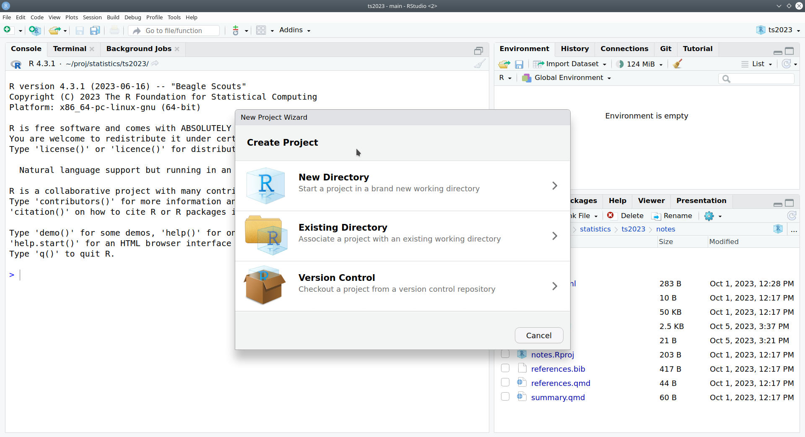
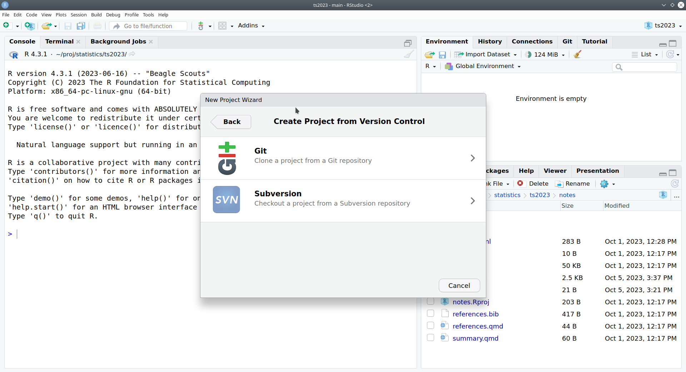
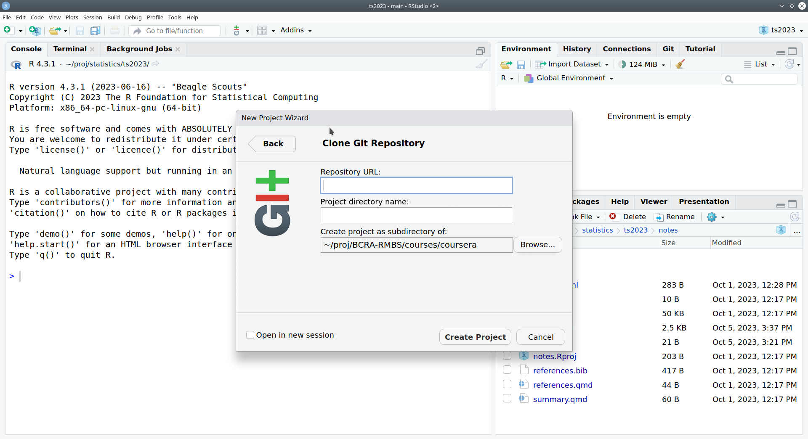
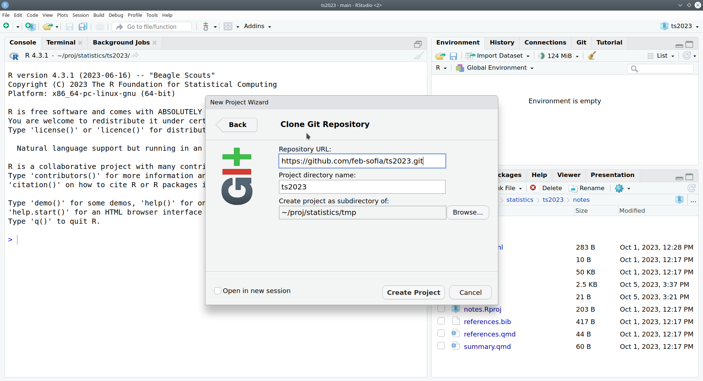
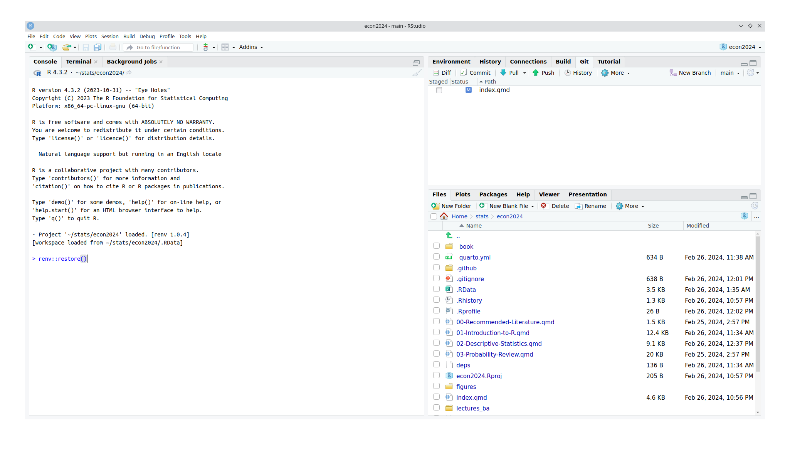
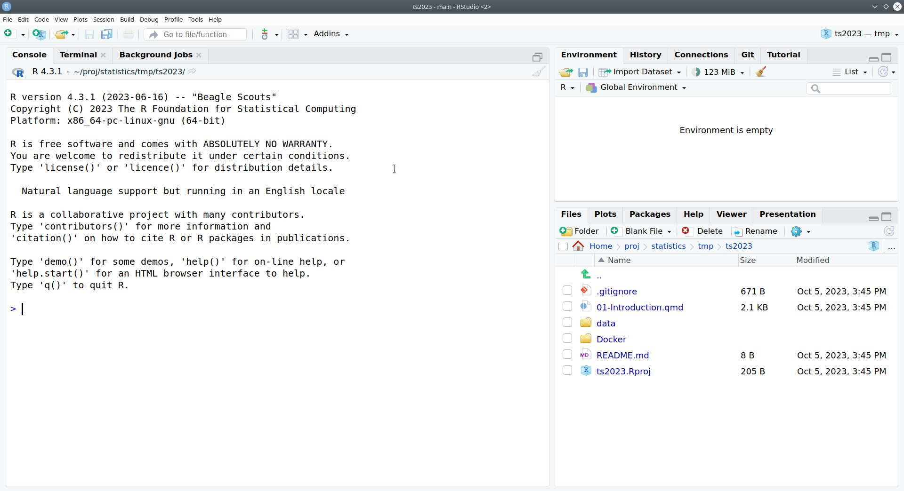
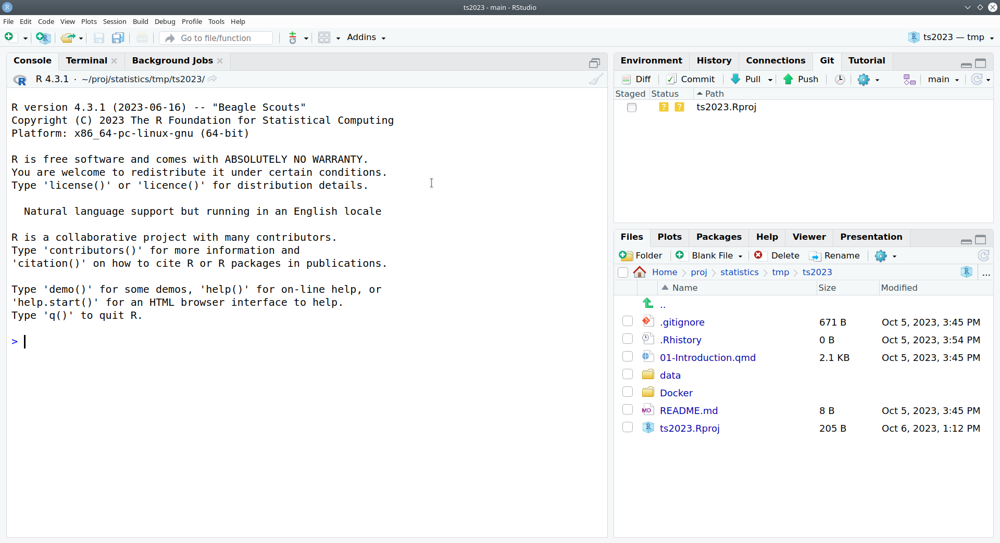
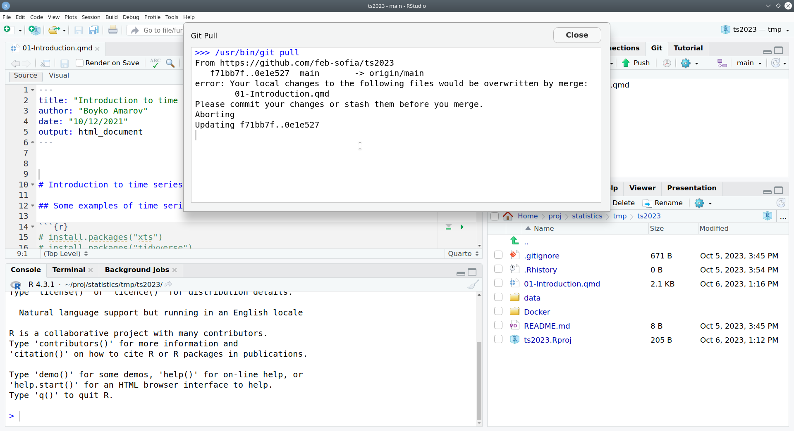
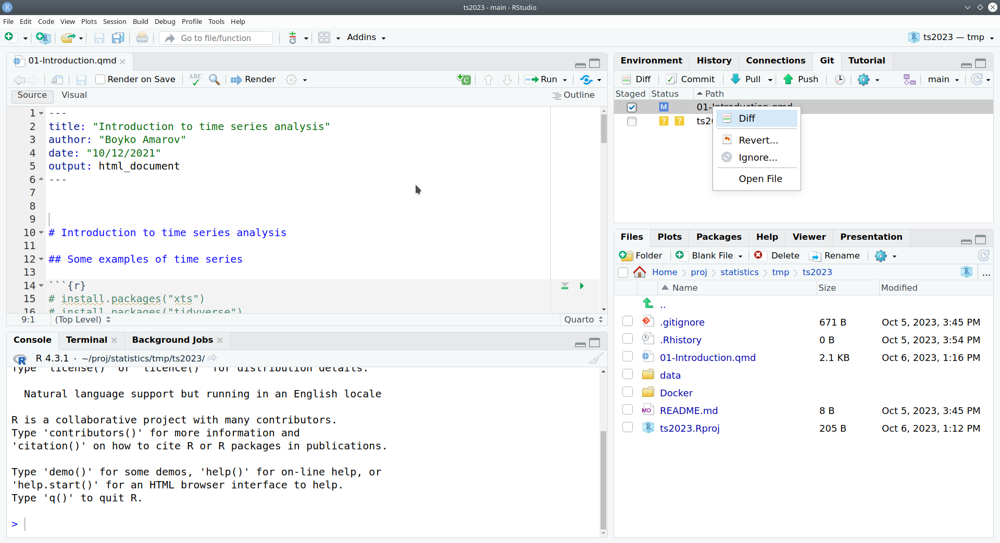

Basic Statistics
General Information

Schedule
- Wed 9:30-11:00 in room 215
- Wed 12:15-14:00 in room 215
Grading
TBA
GitHub Repository
All course materials for the exercise classes will be available in the GitHub repository:
Software Setup
The exercise classes require a minimal software setup:
Install Git for you operating system from https://git-scm.com/downloads/.
Open a GitHub account at https://github.com/signup. While you don’t need an account to download the course materials, you will need one to receive and submit your assignments (this will be explained in details during the exercise classes). You can apply for the GitHub student benefits at https://education.github.com/benefits. If approved you can receive free access to the GitHub Pro plan and to GitHub Copilot, an AI tool that helps you write code.
Open https://cran.r-project.org/, and you will find links to R builds for different operating systems. Click on the link matching your operating system and choose the latest version of R. When using the Windows operating system, you will see a link “Install R for the first time.” Click on this link and then download the R installer. Run the installer. Leave the default settings unchanged unless you know what you are doing.
After installing R, open https://posit.co/download/rstudio-desktop/. If the web page recognizes your operating system, you will see a download button (right side of the page) for R studio. If the button does not appear, scroll down the page and find the installer appropriate for your operating system.
Should you encounter difficulties installing R and R Studio, you can watch these video guides:
- Here are some video guides on how to install git:
- The following steps depend on git being installed. Open R Studio and open a new project dialog: File -> New Project. In the dialog, click on the third option: version control. From the next menu, select git.
  
In the Repository URL field, paste the address of the course repository:
Insert the following address in the Repository URL field:
https://github.com/febse/stat2024.gitthe one shown in the screenshot is outdated.
 Click on the Create Project button and wait for git R studio to clone the repository and open the project.
To install the packages necessary for the course, click on the command line in the R console and type:
renv::restore()This will trigger the download and installation of all the dependencies. It can take some time, so be patient. You only need to do it once.

 6. The content of the GitHub repository will be updated continuously throughout the semester. In order to download the new files or updated versions of already existing files, you can use git pull. Open the git window in the upper right pane of R studio and click the pull button. This will download all changes from the GitHub repository to your local copy.

- Note that if you have modified the files tracked by git that have changed in the repository, git pull will fail with an error similar to this one:

To avoid this, you can roll back the file to its original state. Right-click on the file in the git window and choose “revert.”

- In the exercise classes, we will use many functions from the
tidyversesystem and several other packages. Before accessing these packages’ functionality, you need to install them first. Find the R console in R studio and paste the following line on the command line. Press enter to run it and wait for the installation to complete. Therenvpackage will take care of the installation of the packages in a separate environment, so you should’t worry about installing packages.
In case it does not work, you can install the packages manually by running the following command in the R console:
install.packages(c("tidyverse", "broom"))Optional: more on Quarto: https://quarto.org/docs/guide/
Optional: a base R cheatsheet: https://www.datacamp.com/cheat-sheet/getting-started-r
Optional: R for Data Science: https://r4ds.hadley.nz/